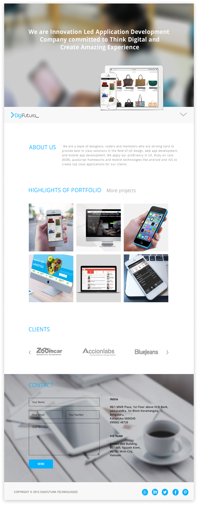

Service Based Startup

This was a service based startup I
worked for three years. We were a
technology driven company specialised
to work for startups.

I came up with the color code of blue and black to indicate that we are tech driven company. I used Roboto regular and bold for the website.
Roboto
Roboto
I started with the home screen and continued with rest of the screens based in the theme and style.
